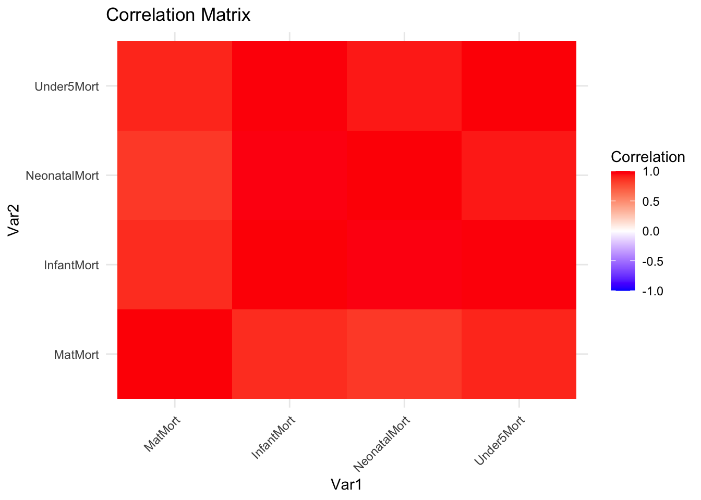

country_name ISO region year gdp1000 OECD OECD2023 popdens
1 Afghanistan AFG Southern Asia 2000 NA 0 0 14.13654
2 Afghanistan AFG Southern Asia 2001 NA 0 0 14.23156
3 Afghanistan AFG Southern Asia 2002 0.1835328 0 0 14.32270
4 Afghanistan AFG Southern Asia 2003 0.2004626 0 0 14.40691
5 Afghanistan AFG Southern Asia 2004 0.2216576 0 0 15.21947
6 Afghanistan AFG Southern Asia 2005 0.2550551 0 0 15.33619
7 Afghanistan AFG Southern Asia 2006 0.2740005 0 0 15.43982
8 Afghanistan AFG Southern Asia 2007 0.3750781 0 0 15.65217
9 Afghanistan AFG Southern Asia 2008 0.3878492 0 0 15.74447
10 Afghanistan AFG Southern Asia 2009 0.4438452 0 0 15.83043
urban agedep male_edu temp rainfall1000 totdeath best_binary
1 16.25324 108.3466 2.762086 12.69959 0.2763704 650 1
2 16.25661 108.9899 2.856936 12.85570 0.2793079 832 1
3 16.42654 109.3472 2.954241 12.71081 0.3805710 441 1
4 16.60701 109.4475 3.054121 12.16592 0.4288939 200 1
5 16.71367 109.2868 3.156706 13.04643 0.3754336 60 1
6 16.85096 107.9646 3.262133 12.23141 0.4415680 42 1
7 16.98105 106.3262 3.370551 12.96153 0.4437097 89 1
8 17.12259 108.3381 3.482112 12.47451 0.4092555 87 1
9 17.26919 109.2404 3.596977 12.63527 0.3901204 105 1
10 17.43508 106.8458 3.715306 12.61764 0.4808727 189 1
MatMort InfantMort NeonatalMort Under5Mort drought_dummy earthquake_dummy
1 1450 90.5 60.9 129.2 1 0
2 1390 87.9 59.7 125.2 0 1
3 1300 85.3 58.5 121.1 0 1
4 1240 82.7 57.2 116.9 0 1
5 1180 80.0 55.9 112.6 0 1
6 1140 77.3 54.6 108.4 0 1
7 1120 74.6 53.2 104.1 1 1
8 1090 71.9 51.7 99.9 NA NA
9 1030 69.2 50.3 95.7 1 0
10 993 66.7 48.9 91.7 0 1
drought earthquake
1 1 0
2 0 1
3 0 1
4 0 1
5 0 1
6 0 1
7 1 1
8 0 0
9 1 0
10 0 1Exploratory Analysis for Armed Conflict Data
Exploratory Data Analysis
This document contains exploratory data analysis for the armed conflict data.
Table of Contents
Load data
Initial check for data dimensions
Checking variable types and general structure
Data summary of numerical variables
Data visualization for predictor and covariates
Data visualization for outcome variables
Check for co-linearity between covariates
Check for co-linearity between outcomes
Loading Data
Initial checks for data dimensions
Checking all variables for type and structure
Rows: 3,720
Columns: 23
$ country_name <chr> "Afghanistan", "Afghanistan", "Afghanistan", "Afghani…
$ ISO <chr> "AFG", "AFG", "AFG", "AFG", "AFG", "AFG", "AFG", "AFG…
$ region <chr> "Southern Asia", "Southern Asia", "Southern Asia", "S…
$ year <int> 2000, 2001, 2002, 2003, 2004, 2005, 2006, 2007, 2008,…
$ gdp1000 <dbl> NA, NA, 0.1835328, 0.2004626, 0.2216576, 0.2550551, 0…
$ OECD <int> 0, 0, 0, 0, 0, 0, 0, 0, 0, 0, 0, 0, 0, 0, 0, 0, 0, 0,…
$ OECD2023 <int> 0, 0, 0, 0, 0, 0, 0, 0, 0, 0, 0, 0, 0, 0, 0, 0, 0, 0,…
$ popdens <dbl> 14.136539, 14.231558, 14.322705, 14.406906, 15.219471…
$ urban <dbl> 16.25324, 16.25661, 16.42654, 16.60701, 16.71367, 16.…
$ agedep <dbl> 108.34663, 108.98989, 109.34716, 109.44753, 109.28682…
$ male_edu <dbl> 2.762086, 2.856936, 2.954241, 3.054121, 3.156706, 3.2…
$ temp <dbl> 12.69959, 12.85570, 12.71081, 12.16592, 13.04643, 12.…
$ rainfall1000 <dbl> 0.2763704, 0.2793079, 0.3805710, 0.4288939, 0.3754336…
$ totdeath <int> 650, 832, 441, 200, 60, 42, 89, 87, 105, 189, 170, 15…
$ best_binary <int> 1, 1, 1, 1, 1, 1, 1, 1, 1, 1, 1, 1, 1, 1, 1, 1, 1, 1,…
$ MatMort <int> 1450, 1390, 1300, 1240, 1180, 1140, 1120, 1090, 1030,…
$ InfantMort <dbl> 90.5, 87.9, 85.3, 82.7, 80.0, 77.3, 74.6, 71.9, 69.2,…
$ NeonatalMort <dbl> 60.9, 59.7, 58.5, 57.2, 55.9, 54.6, 53.2, 51.7, 50.3,…
$ Under5Mort <dbl> 129.2, 125.2, 121.1, 116.9, 112.6, 108.4, 104.1, 99.9…
$ drought_dummy <int> 1, 0, 0, 0, 0, 0, 1, NA, 1, 0, 0, 1, 0, 0, NA, 0, NA,…
$ earthquake_dummy <int> 0, 1, 1, 1, 1, 1, 1, NA, 0, 1, 1, 0, 1, 1, NA, 1, NA,…
$ drought <int> 1, 0, 0, 0, 0, 0, 1, 0, 1, 0, 0, 1, 0, 0, 0, 0, 0, 0,…
$ earthquake <int> 0, 1, 1, 1, 1, 1, 1, 0, 0, 1, 1, 0, 1, 1, 0, 1, 0, 0,…Data summary of numerical variables
year gdp1000 OECD OECD2023
Min. :2000 Min. : 0.1105 Min. :0.000 Min. :0.0000
1st Qu.:2005 1st Qu.: 1.2383 1st Qu.:0.000 1st Qu.:0.0000
Median :2010 Median : 4.0719 Median :0.000 Median :0.0000
Mean :2010 Mean : 11.4917 Mean :0.171 Mean :0.1882
3rd Qu.:2014 3rd Qu.: 13.1531 3rd Qu.:0.000 3rd Qu.:0.0000
Max. :2019 Max. :123.6787 Max. :1.000 Max. :1.0000
NA's :62
popdens urban agedep male_edu
Min. : 0.00 Min. : 0.1025 Min. : 16.17 Min. : 1.067
1st Qu.:14.79 1st Qu.:17.2872 1st Qu.: 47.94 1st Qu.: 5.904
Median :27.52 Median :30.2535 Median : 55.51 Median : 8.368
Mean :30.57 Mean :30.6948 Mean : 61.94 Mean : 8.258
3rd Qu.:40.72 3rd Qu.:41.6558 3rd Qu.: 77.11 3rd Qu.:10.849
Max. :99.86 Max. :93.4135 Max. :111.48 Max. :14.441
NA's :20 NA's :20 NA's :20
temp rainfall1000 totdeath best_binary
Min. :-2.405 Min. :0.01993 Min. : 0.00 Min. :0.0000
1st Qu.:12.928 1st Qu.:0.59146 1st Qu.: 0.00 1st Qu.:0.0000
Median :21.958 Median :1.01288 Median : 0.00 Median :0.0000
Mean :19.625 Mean :1.20216 Mean : 71.56 Mean :0.2661
3rd Qu.:25.869 3rd Qu.:1.68706 3rd Qu.: 1.00 3rd Qu.:1.0000
Max. :29.676 Max. :4.71081 Max. :48183.00 Max. :1.0000
NA's :20 NA's :20
MatMort InfantMort NeonatalMort Under5Mort
Min. : 2.0 Min. : 1.60 Min. : 0.80 Min. : 2.00
1st Qu.: 17.0 1st Qu.: 7.60 1st Qu.: 4.90 1st Qu.: 9.00
Median : 66.0 Median : 18.90 Median :12.10 Median : 22.20
Mean : 210.6 Mean : 28.90 Mean :16.18 Mean : 40.50
3rd Qu.: 299.8 3rd Qu.: 44.52 3rd Qu.:25.32 3rd Qu.: 61.33
Max. :2480.0 Max. :138.10 Max. :60.90 Max. :224.90
NA's :426 NA's :20 NA's :20 NA's :20
drought_dummy earthquake_dummy drought earthquake
Min. :0.0000 Min. :0.0000 Min. :0.00000 Min. :0.00000
1st Qu.:0.0000 1st Qu.:0.0000 1st Qu.:0.00000 1st Qu.:0.00000
Median :1.0000 Median :1.0000 Median :0.00000 Median :0.00000
Mean :0.5527 Mean :0.5272 Mean :0.08737 Mean :0.08333
3rd Qu.:1.0000 3rd Qu.:1.0000 3rd Qu.:0.00000 3rd Qu.:0.00000
Max. :1.0000 Max. :1.0000 Max. :1.00000 Max. :1.00000
NA's :3132 NA's :3132 Initial checks for covariates distribution
From this we learn that total death and GDP are highly skewed variables. It is reasonable, therefore, that we will be using a binary variable for total death. For GDP, the logarithamized graph would likely be easier to visualize.
Visualizing the spread of outcomes
As we can see, all these outcome variables have some extreme outliers, something to consider during data analysis later on.
Correlation matrix for covariates
gdp1000 popdens urban agedep male_edu
gdp1000 1.0000000 0.27795445 0.35779747 -0.45979498 0.58498673
popdens 0.2779544 1.00000000 0.72400777 -0.35956225 0.29127619
urban 0.3577975 0.72400777 1.00000000 -0.35972849 0.36100170
agedep -0.4597950 -0.35956225 -0.35972849 1.00000000 -0.67824459
male_edu 0.5849867 0.29127619 0.36100170 -0.67824459 1.00000000
temp -0.3858074 -0.10186701 -0.05505675 0.39882219 -0.64368392
rainfall1000 -0.1289597 -0.08167352 -0.07585380 0.09075683 -0.13483154
totdeath -0.0375043 -0.02772498 -0.01680103 0.08404943 -0.05639189
temp rainfall1000 totdeath
gdp1000 -0.385807373 -0.12895965 -0.037504301
popdens -0.101867008 -0.08167352 -0.027724982
urban -0.055056751 -0.07585380 -0.016801026
agedep 0.398822188 0.09075683 0.084049427
male_edu -0.643683917 -0.13483154 -0.056391890
temp 1.000000000 0.41148598 0.008813999
rainfall1000 0.411485984 1.00000000 -0.030371351
totdeath 0.008813999 -0.03037135 1.000000000The correlation matrix reveals key relationships between socioeconomic and environmental variables. Higher GDP is positively linked to male education and urbanization but negatively associated with age dependency and temperature (likely reflecting other confounders), indicating that wealthier countries tend to have better education, more urbanization, and lower age dependency. Urbanization is strongly correlated with population density. These are important insights because they verify relationships that align with our knowledge of the world.
Correlation matrix for outcomes
MatMort InfantMort NeonatalMort Under5Mort
MatMort 1.0000000 0.8785612 0.8354908 0.8994877
InfantMort 0.8785612 1.0000000 0.9590878 0.9861117
NeonatalMort 0.8354908 0.9590878 1.0000000 0.9278720
Under5Mort 0.8994877 0.9861117 0.9278720 1.0000000
Unsurprisingly, mortality outcomes are all highly inter-correlated (before conditioning on other variables), to the point of not being particularly informative as separate outcomes at this stage. Hence moving forward, I will primarily on total deaths.
Geographic visualization of outcome variable total death
Here we plot the total deaths by year over a world map, which is a natural way to plot data for geopolitical variables. This gives us an evolving picture of global conflicts across time with a heatmap showing total deaths. What is particularly noticeable is significant spikes in mortality in the first half of the study in some countries in Africa, and South East Asia and Middle East in the latter half.
Visualization of Deaths by Region
Next, we can start to create some visualizations to study relationships between multiple variables which may help us design our causal analyses later. Here we combine several subregions into regions to study them together. In this bubble plot, color represents region, size represents average number of deaths by year, and these are plotted against logarithm of GDP and population density. A relationship is beginning to emerg, showing that countries with lower GDP tend to have higher rates of total deaths, however region tends to show much stronger influence on total deaths.
Bump Chart Visualization for Global Infant Mortality Ranking
Finally, we look at the top 15 countries with respect to infant mortality over time, which is an outcome of interest Here we use a bump chart. For instance, we see the rank rise in the early 2010s in the DRC, at a time of significant conflict in the region.
As we can see, there are both numerical and visual ways of exploring the rich information found in this database. The visualizations help suggest many potential avenues for further research, which would require a careful deep dive into particular trends found within the data.